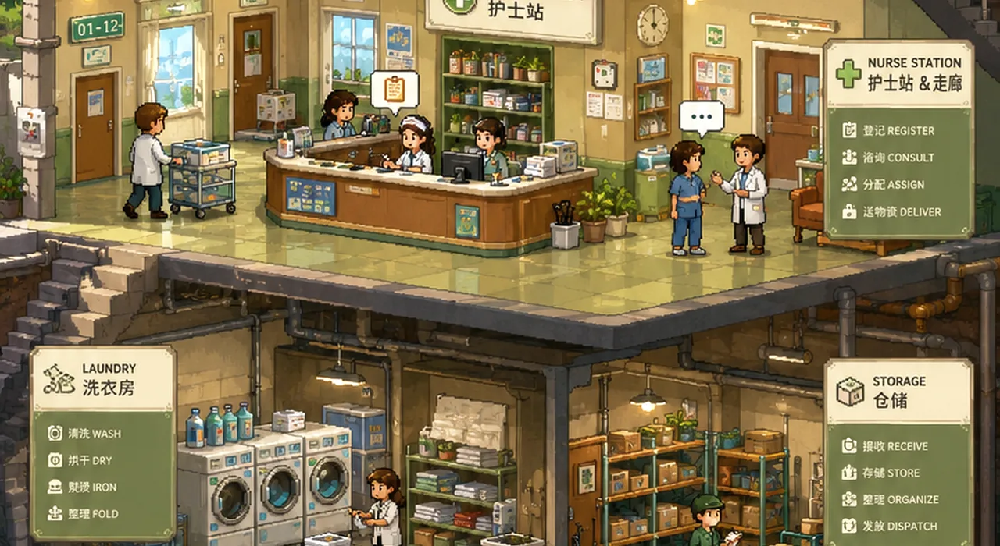
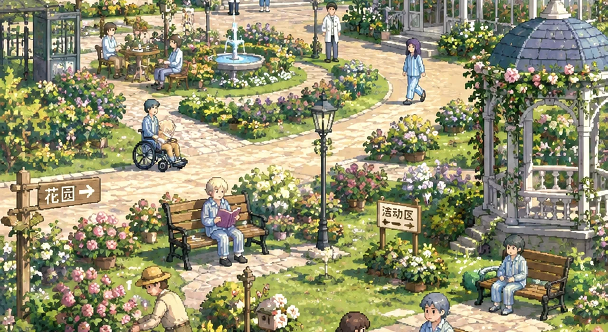

体力
行动需要足够体力。病房休息、点心和正常过夜可以恢复；体力不足时无法执行对应行动。

你被以错误身份送入疗养院。14天后，你将被转往高戒备病区。
经营每一天，成长、工作、交朋友、收集证据，并找到真正离开的办法。
你醒来时，腕带上写着一个陌生的名字。护士告诉你：“这是你的第七码住院记录。”
你坚持自己叫 林默，只是几天前突然被人带走。可病历写着：患者存在“持续身份妄想”。
更糟的是，你听见工作人员谈论：14 天后，你会被转往高戒备病区。
你现在做什么都可能被解释成“症状”。想离开这里，不能只靠喊“我没病”。你需要先把自己的生活经营起来。
先从熟悉环境、工作和认识病友开始。
能力不是为了“打赢”医院，而是为了得到更多工作、关系和行动选择。
正常过夜使药物负荷降低 10，病房休息降低 6；怀疑达到 60 会触发小黑屋，信任则决定设施开放范围。
这些数值会直接改变每天能做多少事、可以进入哪里，以及能够执行哪一种离院方案。
行动需要足够体力。病房休息、点心和正常过夜可以恢复；体力不足时无法执行对应行动。
低于 25 时每天 5 次行动；25–49 时 4 次、每次额外消耗 3 体力且成长为 80%；达到 50 时为 3 次、额外消耗 6 体力且成长为 60%。
信任低于 45、30、20 会逐级封锁设施；方案 A 还要求信任达到 78。稳定活动可以改善评价。
危险调查和避药会增加怀疑。达到 60 会立即中断行动、取消剩余行动并触发小黑屋处分。
提高高消耗行动的准备程度，是维修通道方案 B 的核心能力之一，需要达到 Lv.3。
提升工疗收益和材料产量，并帮助开放洗衣房等后勤区域，为物品与路线准备资源。
推动人物关系、院外联络和复核申请；方案 A 需要 Lv.3，隐藏方案 C 需要 Lv.4。
发现编号、排班和档案矛盾，开放关键调查方式；维修通道方案 B 需要达到 Lv.3。
帮助别人，关系会给你带来稳定资源、区域机会和关键线索。
传闻只是方向；真正的关键证据会改变离院条件。
小卖部已经移入“院内生活”。进入免费，每次进入后的第一次成功购买消耗一次行动。
方案 A 依赖完整证据，方案 B 可以直接从维修通道离开；满足隐藏条件后，还会出现方案 C。

你没能在规定时间内做好准备。